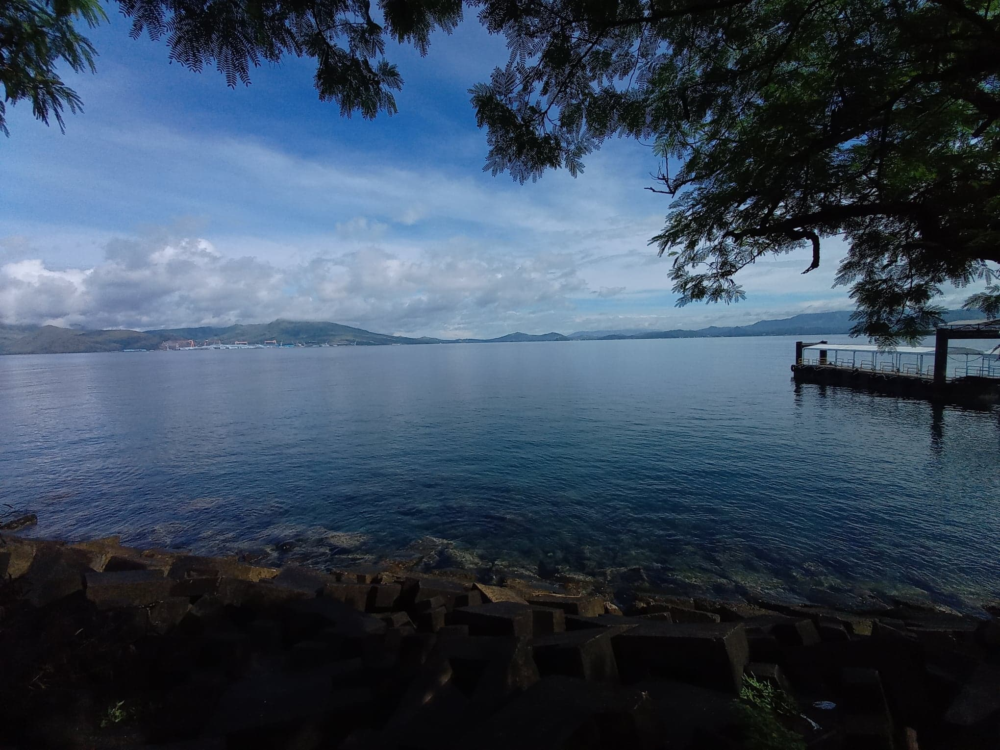

OUR VISION
With whatever radical or controversial opinions you may have that may not be taken too well by the general public, the team change site is open to all. We are always open-minded in terms of submissions for content to posted on the site. The Team Change official site will always be a safe place to post your ideas and possibly connect with people with the same mindsets.
Daily Slogan
Photography Contest Winner
COVID-19 Today
It is equally both saddening and unbelievable that we are all currently two hundred and ten days
into the lockdown due to the COVID-19 pandemic and only the Lord knows when this whole ordeal will
cease. The pandemic has affected the lives of so many in varying severities. So far progress on
the vaccine situation is terribly slow, cases are still rising, and the curve is only getting worse.
Hospitals are running low on supplies, PPE, facilities, beds, and personnel. This state of suffering
may persist for years and years, yet we decide to stay stagnant. The situation has intruded the daily
lives of too many for too long now. It is time to switch tactics; time to be decisive and stern so we
may end the pandemic. It is time for action.
Let us begin by back-tracking on one of our strongest international allies,
China. It is believed that the origin of the SARS-2 coronavirus was in Wuhan,
China and with China being the most populated country in the world, the virus
quickly spread throughout the country later blowing up to a global scale. Albeit
China would be the most likely to take the heaviest blow, they seem to be doing
better than many other countries now in controlling the virus. “How is this possible?
How did they do it without the vaccine?” Well if we were to observe the actions
taken by the Chinese government, you may notice a pattern of enforcement and complete
release. China shocked the world with headlines of Zoos and Parks being filled to the
brim with people while other countries were suffering economically due to elongated
lockdowns. This obviously led to a resurgence in cases and many deaths brought by
the virus, so how are they performing this well against these odds? This is what
I would like to answer in my own proposal of how we should handle this pandemic situation.